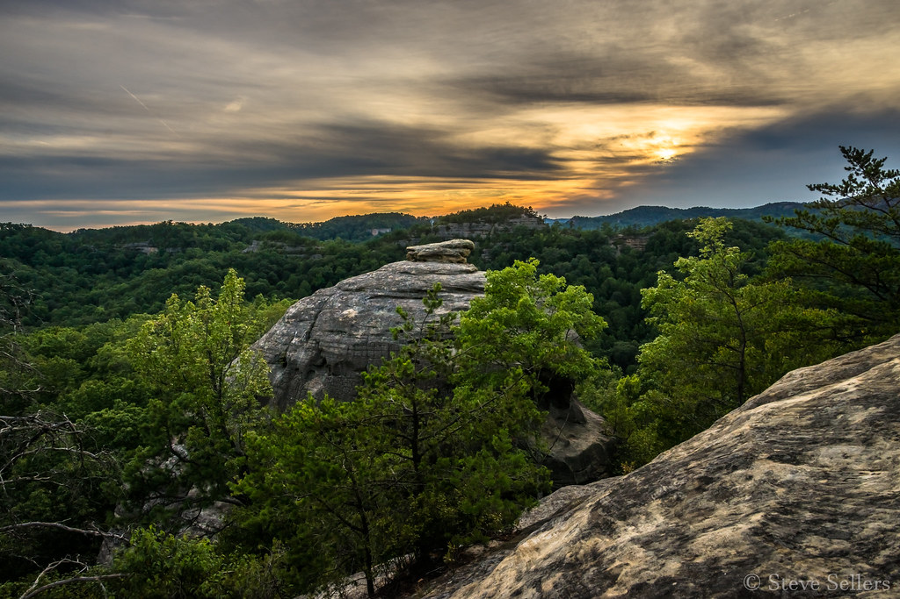
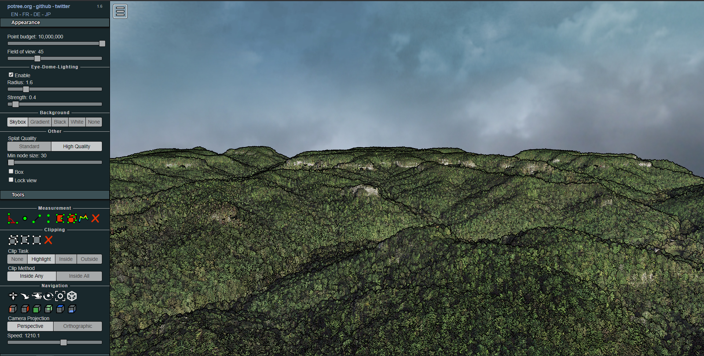

The Red River Gorge: A Portfolio
Drew Taylor
About the Gorge
The Red River Gorge is an area of the Daniel Boone National Forest abundant in dramatic landscapes. It is primarily formed by canyons surrounding its namesake, the Red River.
This project is the culmination of a semester's worth of work in GEO 409 at the University of Kentucky. It is intended to demonstrate both my growth in GIS skills and the beauty of the Gorge.
Basemap
A land-use basemap of the Red River Gorge

Photograph of Cloud Splitter by Adam Gall, used for educational purposes
Project Information
This project was created by Drew Taylor as part of GEO 409 at the University of Kentucky in Spring of 2020. All data is used for educational purposes.


Photograph of a Gorge-ous sunrise by Steve Sellers
Potree Interactive Scene
An interactive 3D model of the area surrounding Cloud Splitter in the Red River Gorge
Tools used in this project
- ArcGIS Pro was used to process lidar data, calculate elevation derivatives, create the basemap and its layout, and produce the flyover animation.
- The interactive contours map uses Mapbox with geolocation services enabled.
- The interactive model was built using the open-source Potree framework.
Video Flyover
A flyover animation of Cloud Splitter and surrounding landforms, produced in ArcGIS
Project Assets and Sources
- Arch point locations GeoJSON (from the Geographic Names Information System)
- Lidar data from KyFromAbove
- Aerial imagery from the U.S. National Aerial Imagery Program
- Land type data from the National Land Cover Database
- Streams and water-bodies data from the USGS National Hydrography Dataset
- Streams and water-bodies data from the USGS National Hydrography Dataset